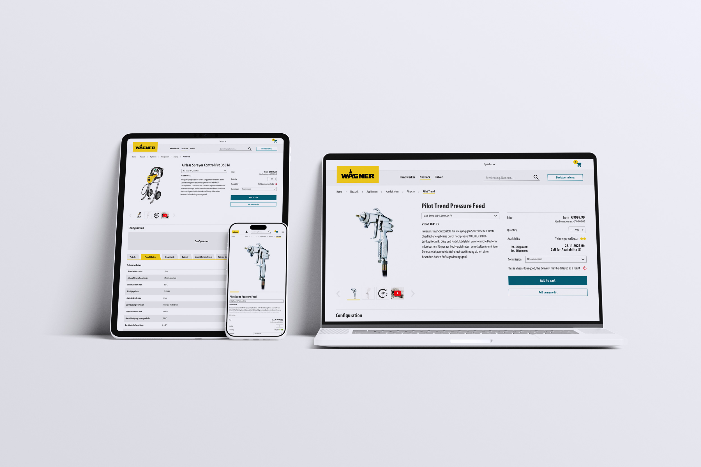
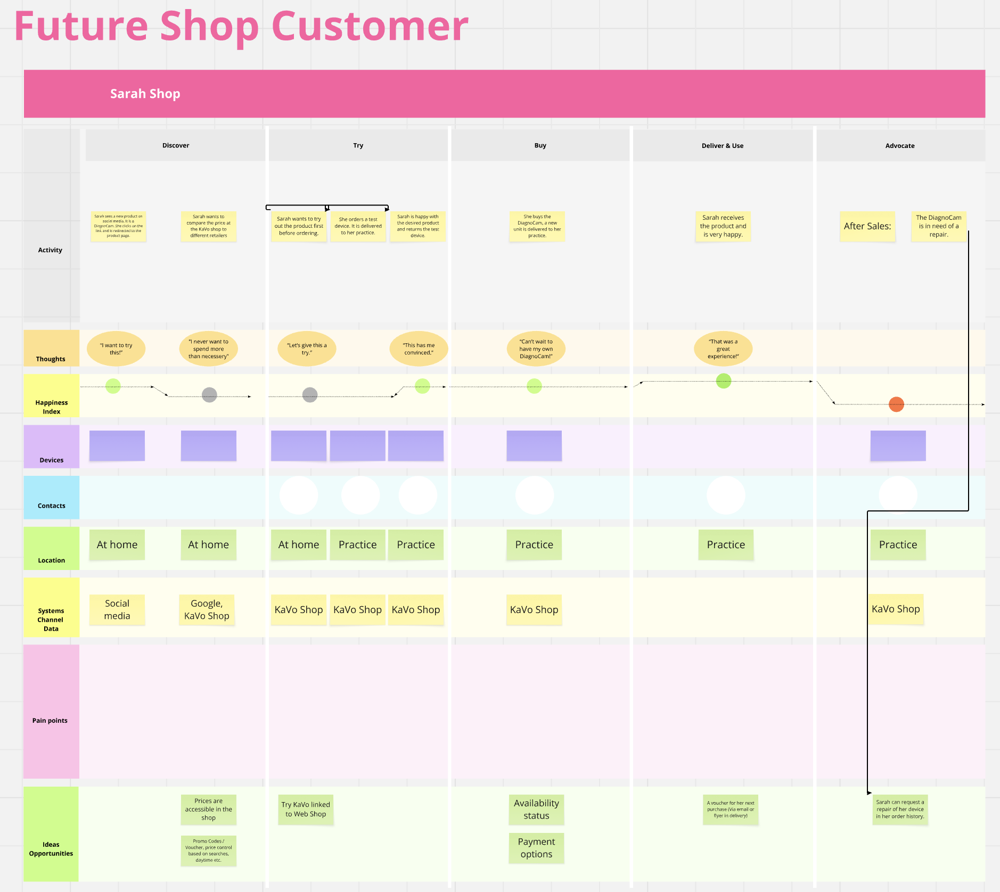
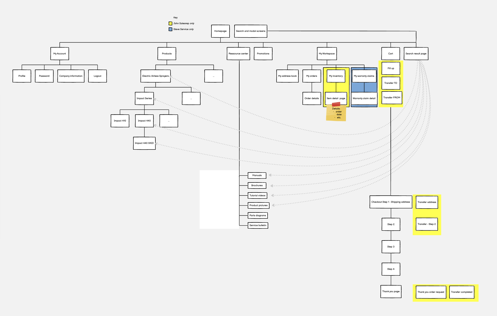
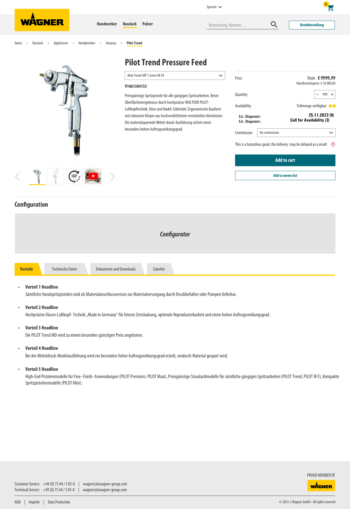

eShop Relaunch & US Market Expansion Under a New Name.
J. Wagner GmbH one of the world's leading manufacturers of spray systems, needed a modern B2B commerce shop on SAP Spartacus. After the successful European launch, the platform was rebranded for the US market as Titan Tools. Same technology, new brand identity.

SAP standard meets brand world.
Wagner operates a broad B2B range of professional spray and coating systems, from airless devices to industrial pumps. The existing shop was technically outdated and did not meet the requirements of professional dealers and tradespeople. At the same time, the platform needed to scale for the US market under a new brand.
Concept & Design System on SAP.
Responsible for Research, Journey Mapping, UX Concept and the entire Hi-Fi Design on SAP Commerce / Spartacus. Workshops with Wagner stakeholders, moderated user tests, and the creation of a token-based design system that served as the foundation for both brands.
Two markets, one tempalte.
After the relaunch of the Wagner shop in Europe, the complete rebranding for the US Titan Tools market followed, with adapted design language, localised content and a new brand identity, built on the same SAP Commerce Cloud base.
From customer journey to US rebranding.
Research, workshops and usability tests as foundation, then iterative design, development support and finally the market expansion to the US.




Two personas, two paths into the shop.
Two clearly distinct user types emerged from the start: Sarah Shop, the professional end-customer who buys and evaluates products herself, and Nils Newcomer, the retail sales rep who configures and quotes for his clients.
Customer Journey Maps for both personas revealed pain points along the entire purchase journey, from product discovery through purchase to after-sales. These insights defined the design priorities for the shop.
SAP Spartacus as foundation. Individually customised.
The shop is built on SAP Commerce Cloud with a Spartacus frontend. The system architecture was planned in close alignment with the development team: Which components does Spartacus handle out-of-the-box? Where does Wagner need custom extensions?
The Product Detail Page as centrepiece.
The PDP is the most critical screen in the shop. This is where purchase or abandonment is decided. The design focuses on: fast product identification via SKU search, structured variant selection through the configurator, availability and delivery dates visible at a glance.
Tabs for Benefits, Technical Data, Documents and Accessories were validated and iterated through moderated user test sessions before the Hi-Fi design was handed off to the development team.
Responsive, from the shop floor to the office.
The final design was implemented for Desktop, Tablet and Mobile. Wagner dealers configure on laptops, while tradespeople frequently access product information on mobile. Every breakpoint variant was explicitly designed and documented in the dev handoff.
The European relaunch went live on the new platform in multiple language versions (DE / EN / FR and more) with centralised content management in SAP.
Titan Tools. The US version of the platform.
After the Wagner launch came the rebranding for the North American market: Titan Tools, the US brand of the Wagner Group. Same platform, new design language: adapted colour palette, typography and imagery, localised UX patterns for the US market.
The existing design system was systematically reworked: tokens swapped, components recoloured, marketing pages redesigned, all in close alignment with the Wagner brand team.
Shop design in detail.
Hi-Fi Design · Figma
Wagner Shop · Product Detail Page auf Desktop, Tablet & Mobile
PDP · Desktop view with Configurator & Tab Navigation
Design System
Screen Recordings · 2023
The design system developed for the Wagner eShop: colour palette, typography, component library and interaction patterns, aligned with the Wagner brand world and the technical constraints of SAP Spartacus.
Wagner Design System · Styleguide · Figma Component Library
Titan Tools. Wagner reimagined for North America.
Titan Tools is the North American brand of the Wagner Group, specialising in professional airless spray systems for the US trade and industrial market. The rebranding translated the proven Wagner platform into a standalone brand identity.
New primary colours, adapted typography, US-specific content structures and localised checkout processes, but the same solid SAP Commerce Cloud base and the same underlying UX foundation.